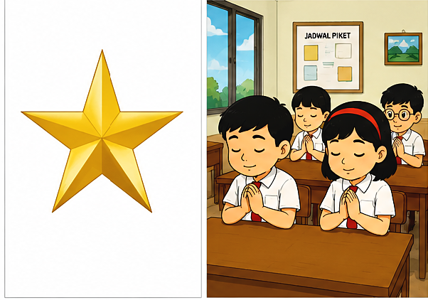
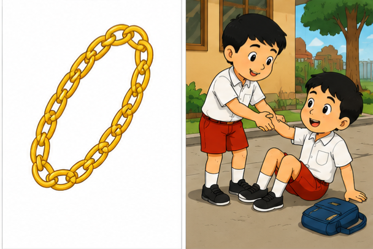
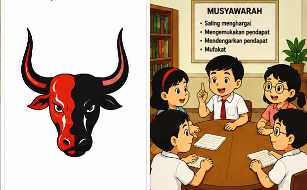

Menghidupkan Pancasila dalam Keseharian
"Pancasila bukan sekadar teks formal yang kita hafal di luar kepala, melainkan jiwa, fondasi, dan pedoman hidup nyata."

1. Ketuhanan Yang Maha Esa
- Berdoa sebelum dan sesudah melakukan kegiatan.
- Menghormati perbedaan agama di lingkungan sekitar.

2. Kemanusiaan yang Adil dan Beradab
- Menolong teman yang sedang kesulitan.
- Bersikap sopan dan santun kepada semua orang.

3. Persatuan Indonesia
- Menghargai keragaman suku, ras, dan budaya.
- Bangga menggunakan bahasa Indonesia dan produk lokal.
Simak Audio Kebangsaan

4. Kerakyatan yang Dipimpin oleh Hikmat
- Bermusyawarah dalam mengambil keputusan bersama.
- Menghargai pendapat orang lain saat berdiskusi.

5. Keadilan Sosial bagi Seluruh Rakyat
- Berlaku adil terhadap sesama teman.
- Menghargai hak dan kewajiban orang lain.